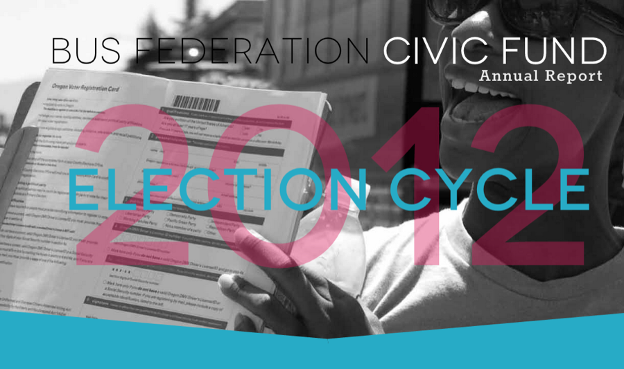
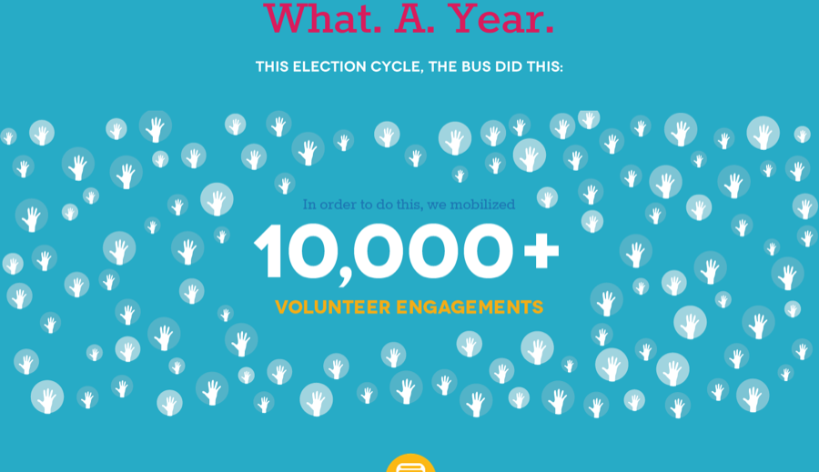
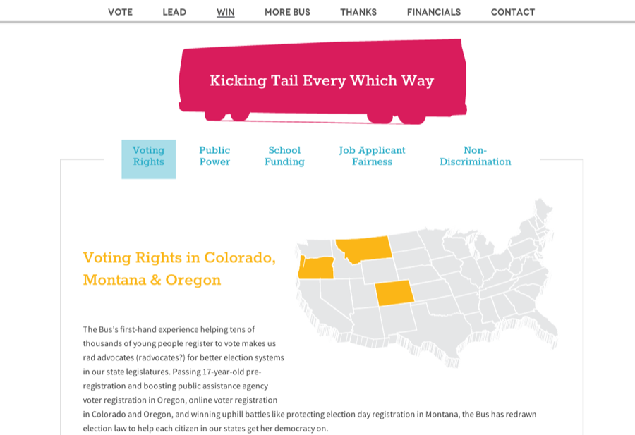
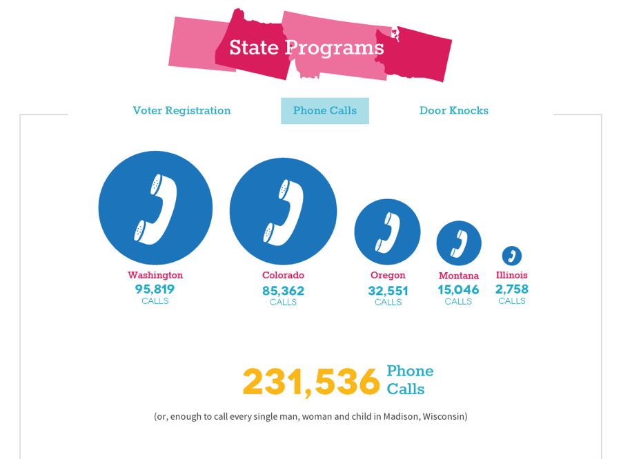
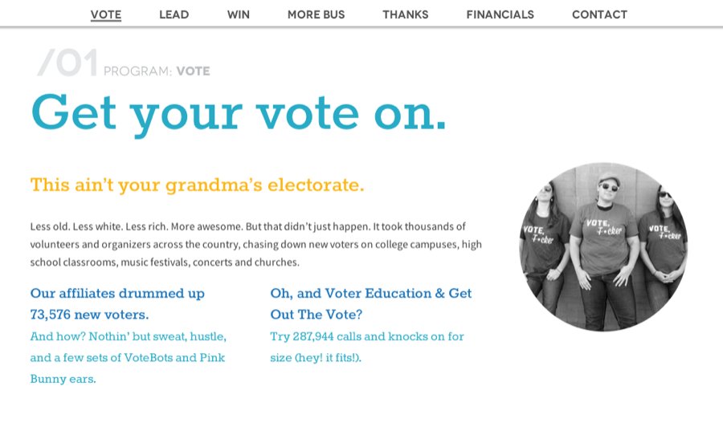

Project · The early internet & client work
Bus Federation Annual Report
A kick-ass annual report for a kick-ass organization, with the Bus Federation Civic Fund
- Since
- 2013
- Design
- Mollie Ruskin, Reboot
The Bus Federation had an insane year in 2012: They pioneered two brand-new programs (TheBallot.org and National Voter Registration Day), while launching an organization in two more states (Idaho and Illinois), and while still doing all of their other national programs. And this doesn't even count the work that was being done across the states.
They needed a web and print version to showcase their achievements for funders, volunteers, and staff that are scattered across the country. Working in conjunction with Reboot, I built out a long site which laid out the entire story of the Bus Federation's 2012 cycle - using sliders and tabs to compress 30+ pages of content into a single scrollable site.
The site utilized the SCRN theme with a custom plugin to hijack the styling function - with stylesheets originally being written in LESS.
Screens · from the site





Links